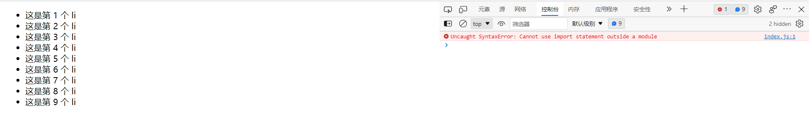
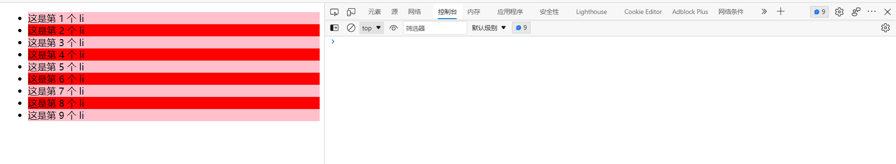
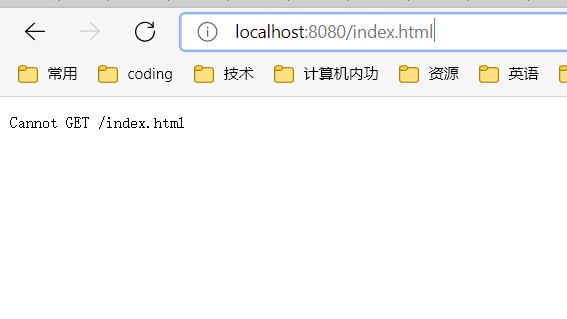
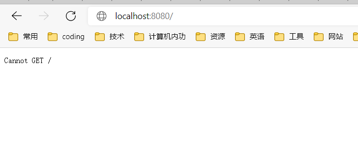
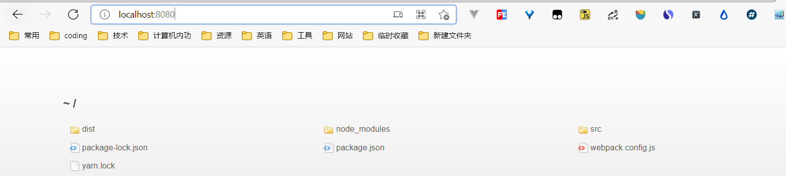
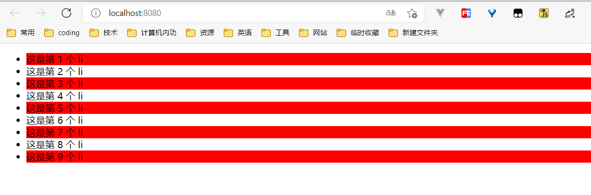

webpack学习记录
什么是webpack？
webpack是前端工程化的具体解决方案，用于打包的，webpack分析项目结构,找到javascript模块以及其他的一些浏览器不能直接运行的拓展语言(如Scss，typescript等)，并将其打包为合适的格式以供浏览器使用
主要功能
它提供了有好的前端模块化支持，以及代码压缩混淆、出力浏览器端javascript的兼容性、性能优化等强大的功能.
webpack基本使用
- 新建项目空白目录、并运行npm init -y，初始化包管理配置文件package.json
- 新建src源代码目录
- 新建src->index.html首页和src->index.js脚本文件
- 初始化首页基本的结构
- 运行npm install jquery -S 命令安装jquery
- 通过es6模块化的方式导入jquery，实现列表隔行变色效果
index.hml
1 |
|
index.js
1 | import $ from 'jquery' //用 es6 默认语法导入 Jquery |
运行结果
报错如图

思路: 使用webpack打包
安装webpack
1 | npm install webpack@5.42.1 webpack-cli@4.7.2 -D |
-D –save-dev 简写 参数解释: 将包记录到devDependencies里面，只在开发时候使用
在项目中配置webpack
在项目根目录中，创建名为webpack.config.js的webpack配置文件，并初始化如下的基本配置
1
2
3
4module.exports={
mode: 'development'
}在package.json的scripts节点下，新增dev脚本如下
1
2
3"scripts": {
"dev": "webpack"
},在终端运行
1
npm run dev
1
2
3
4
5
6
7
8
9
10
11PS D:\codingprojects\vue\learn\webpack\example1> npm run dev
> example1@1.0.0 dev
> webpack
asset main.js 323 KiB [emitted] (name: main)
runtime modules 937 bytes 4 modules
cacheable modules 282 KiB
./src/index.js 244 bytes [built] [code generated]
./node_modules/jquery/dist/jquery.js 282 KiB [built] [code generated]
webpack 5.42.1 compiled successfully in 2111 ms
结果: 在根目录生成了dist目录 包含main.js
在index.html中修改script的src为../dist/main.js
最终结果

webpack继续探索
上面的例子是打包的main.js包含了注释 大小为323KB
mode为production
将mode改为production再次打包
再次运行 npm run dev
运行结果
1 | PS D:\codingprojects\vue\learn\webpack\example1> npm run dev |
查看文件，注释没有了! 大小变成了282KB
缺点：打包时间长,production用于生产,开发时使用development，速度快
原理：在运行 npm run dev 时会去先读取根目录下的webpack.config.js
思考： 为何执行命令就可以把jquery.js和自己编写的index.js打包到dist/main.js中呢？
webpack 中的默认约定
在webpack 4.x 和 5.x的版本中，有如下的默认约定
- 默认的打包入口文件 src -> index.js
- 默认的输出文件路径为 dist -> main.js
但是可以在webpack.config.js可以修改默认配置
1 | const path = require('path') |
当前问题： 每次修改了源文件都要执行打包命令，非常耗时
webpack-dev-server 插件 热更新
问题解决： 安装插件 webpack-dev-server
1 | npm install webpack-dev-server@3.11.2 -D |
修改package.json中的scripts
1 | "scripts": { |
执行 npm run dev 并访问 localhost:8080
此处注意版本问题： 如版本过高导致访问的时候出错
出现类似的错误


正确显示：

现在修改了能动态编译，但是修改了相关的元素访问依旧是无效
原因：因为是生成的bundle.js是存放在内存中，script中的src要引用内存当中的bundle.js
1 | <script src="/bundle.js"></script> |
当前问题: 打开localhost:8080后还要点击src才能访问网页
需求： 一访问则直接进入
解决： 安装html-webpack-plugin
1 | npm install html-webpack-plugin@5.3.2 -D |
配置插件：
1 | const path = require('path') |
效果如图:

devServer 配置
1 | devServer:{ |
loader 配置
打包处理 CSS 文件
1 | import $ from 'jquery' // 用 es6 默认语法导入 Jquery |
1 | module:{ |
webpack只能处理js结尾的文件，其他的文件无法处理，要借助相应的loader
处理css文件要安装对应的loader
1 | npm i style-loader@3.0.0 css-loader@5.2.6 -D |
当 webpack 发现某个文件处理不了的时候，会查找 webpack.config.js 这个配置文件，看 module.rules 数组中，是否配置了对应的 loader 加载器
当webpack 把index.css 这个文件，先转交给最后一个 loader 进行处理 （ 先转交给 css-loader） css-loader再转交给上一个…
打包处理 less 文件
- 安装less的loader
1 | npm install less-loader@10.0.1 less@4.1.1 -D |
- 配置rules
1 | module:{ |
处理图片文件
安装相应的loader
1 | npm install url-loader@4.1.1 file-loader@6.2.0 -D |
配置rules
1 | module:{ |
**limit参数解释: ** 当文件大小小于limit(byte)时，图片会转成base64，以减小网络请求，当图片大小大于limit时则不会转成base64
处理js文件中的高级语法
webpack 只能打包处理一部分高级的 JavaScript 语法。对于那些 webpack 无法处理的高级 js 语法，需要借
助于 babel-loader 进行打包处理。 例如以下的代码
1 | function info(target){ |
安装babel-loader
1 | npm i babel-loader@8.2.2 @babel/core@7.14.6 @babel/plugin-proposal-decorators@7.14.5 -D |
配置rules
1 | rules:[// 文件后缀名的匹配规则 |
另在项目根目录中创建名为 babel.config.js 的配置文件
1 | module.exports = { |
打包发布
配置webpack的打包发布
package.json中配置scripts
1 | "scripts": { |
source Map
Source Map 就是一个信息文件，里面储存着位置信息。也就是说，Source Map 文件中存储着压缩混淆后的代码，所对应的转换前的位置。有了它，出错的时候，除错工具将直接显示原始代码，而不是转换后的代码，能够极大的方便后期的调试
配置： webpack.config.js文件中的modules添加devtool
调试时配置
1 | module.exports={ |
在发布时配置:
1 | module.exports={ |
@ 符号
配置webpack.config.js
1 | resolve: { |